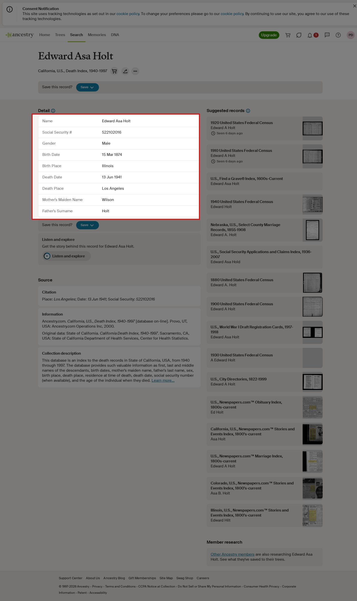

Edward Asa Holt d. 1941
Great-great-grandfather of Shayla Nadah Alamdari, wife of Peter.
Edward Asa Holt. He married May Eaton on 4 May 1898 in Nebraska, United States3. He died on 13 Jun 1941 in Los Angeles, California, United States1 and was buried at Glendale, California, United States2.
Family
- Wife
- May Eaton 1874–1941 · married on 4 May 1898 in Nebraska, United States3
- Children
- Berniece Wilmina Holt b. 1910 documented
Life events
| Event | Date | Place and details |
|---|---|---|
| Married | 4 May 1898 | with May Eaton Nebraska, United States3 |
| Buried | Jun 1941 | Glendale, California, United States2 |
| Died | 13 Jun 1941 | Los Angeles, California, United States1 |
Records


Sources
- California Death Index entry for Edward Asa Holt (1874–1941).
Name: Edward Asa Holt | Social Security #: 522102016 | Gender: Male | Birth Date: 15 Mar 1874 | Birth Place: Illinois | Death Date: 13 Jun 1941 | Death Place: Los Angeles | Mother's Maiden Name: Wilson | Father's Surname: Holt
Died 13 Jun 1941 in Los Angeles County, California (born 15 Mar 1874 in Illinois; Father's Surname: Holt, Mother's Maiden Name: Wilson)
- Find a Grave Memorial #85427413: Edward Asa Holt (1874–1941), Memorial 85427413, Plot Eventide, Map 1, Lot 1759, Space 1.
Edward Asa Holt | Birth 15 Mar 1874 Livingston County, Illinois, USA | Death 13 Jun 1941 (aged 67) Los Angeles County, California, USA | Burial: Forest Lawn Memorial Park, Glendale, Los Angeles County, California, USA | Plot: Eventide, Map 1, Lot 1759, Space 1
Buried at Forest Lawn Memorial Park, Glendale, Los Angeles County, California, Plot Eventide, Map 1, Lot 1759, Space 1 (adjacent to his wife May Eaton Holt in Space 2). Also records his exact birth county as Livingston County, Illinois (15 March 1874).
- Otoe County, Nebraska Marriage Certificate No. 521 (4 May 1898): Edward A. Holt & May Eaton, Otoe County, Certificate No. 521 (record 900073558, image 47291_552527-00746).
STATE OF NEBRASKA, COUNTY OF OTOE | No. 521 | Mr. Edward A. Holt (Age 24, Born Illinois, Residence Unadilla, Nebr., Father Asa Holt, Mother Jane Wilson) and Miss May Eaton (Age 23, Born Otoe Co., Nebr., Residence Syracuse, Nebr., Father James W. Eaton, Mother Mary E. Eaton) | License issued 2nd May 1898 by J. W. Eaton, County Judge | Married 4th May 1898 at Syracuse by E. L. Barch, Pastor M.E. Church | Witnesses: Mr. Chas. Joyce, Miss Nettie Eaton.
Original Otoe County, Nebraska Marriage License and Certificate (No. 521) for the marriage of Edward A. Holt (age 24, white, born in Illinois, resident of Unadilla, Otoe County, Nebraska, son of Asa Holt and Jane Wilson) and May Eaton (age 23, white, born in Otoe County, Nebraska, resident of Syracuse, Otoe County, Nebraska, daughter of James W. Eaton and Mary E. Eaton), solemnized 4 May 1898 at Syracuse, Otoe County, Nebraska by E. L. Barch, Pastor of M. E. Church, in the presence of Mr. Chas. Joyce and Miss Nettie Eaton. Supplies the primary certificate image for S-parent-links-online-marriage-of-may-eaton-and-edward-a-holt-4-ma. Note, 2026-11-16 (family session): the saved image is a 399x600 thumbnail; it is legibly the Edward A. Holt and May Eaton record, aged 24, Syracuse, Otoe County, but the parents' names are not reliably readable at this size (two direct readings gave the groom's father as 'Isaac' or 'James' Holt and his mother as 'Emma Haton/Halen', and the bride's father as 'James H. Eaton'), and the page number on the image reads 499. The parents given above come from the index, not from this image; a full-size image is needed.